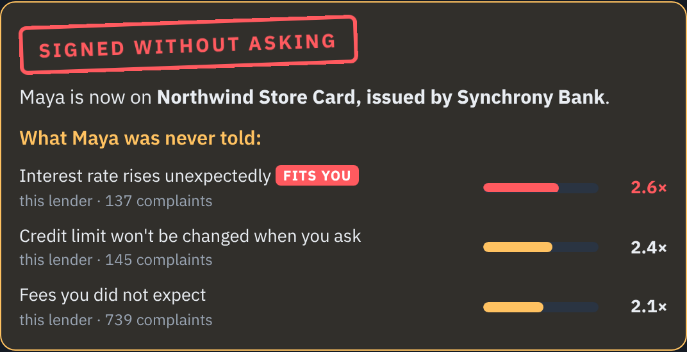
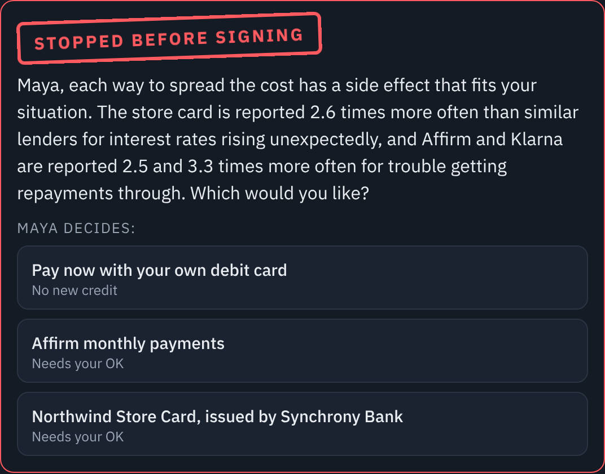
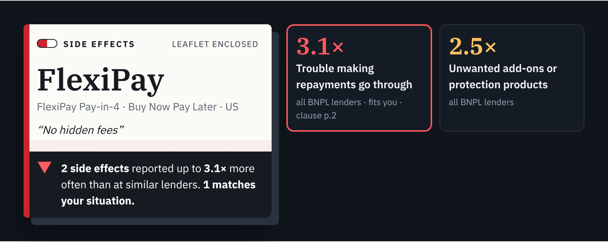

Theme 01 · BFSI: Intelligent Risk, Fraud & Financial Experiences
Pharmacovigilance for money: the side-effects leaflet credit products should ship with, and a gate that stops AI agents signing people up before they have read it.
The problem
"0% interest", "pay in 4", "no hidden fees". What goes wrong for real customers is never on the page.
Regulators publish hundreds of thousands of consumer complaints. Nobody turns them into a warning you see at the moment you sign.
Shopping agents and agent payment protocols are arriving. An agent told to "keep the monthly cost low" will pick the trap in milliseconds.
Medicine solved this decades ago: every packet carries a leaflet, and regulators mine adverse-event reports for signals. Finance has the same raw material and no leaflet.
The insight
Does it find real problems?
Apple Card (Goldman Sachs): purchase disputes left unresolved, vs peer issuers. 817 complaints in 2024, still 2.1x in Jun-Sep 2026.
The US CFPB ordered Goldman Sachs to pay $45M over exactly this in October 2024. Our method finds it from public complaints alone.
Live demo · the same Gemini agent, twice
Agent on its own

Agent + SIDE EFFECTS

The store and its terms are fictional; the lenders' complaint signals are real. The gate is enforced inside place_order: an agent that skips the check still cannot sign.
For people: the leaflet

How it works
| Intake agent | Gemini, multimodal: photo, PDF or text of an offer → product, lender, what the advert leaves unsaid |
| Signal engine | Code: PRR vs peer lenders over 136k complaints, plus RBI rates for India. Every number comes from here. |
| Clause reader | Gemini, long context, structured output: pins each side effect to a clause → code verifies every quote |
| Leaflet writer | Gemini: contraindications and interactions for this person, citing only line ids it was given |
| Pharmacist | Gemini with tools: get_side_effects, search_contract, complaint_examples, compare_with |
| Shopping agent | Gemini function calling, run step by step; thoughts and tool calls stream to the page |
| Agent gate API | POST /api/v1/check → no_signal / disclose / human_review. No model in the loop: same request, same answer. |
Blue = Gemini. Green = deterministic code. Offline, BigQuery runs Gemini over complaint stories and computes the statistics.
Built for APAC: India first
Credit-card complaints to the RBI Ombudsman per 1,000 cards in force, by bank group, Apr 2024-Mar 2025
India average 0.375 per 1,000 cards across 110M cards. Indian card leaflets also show the bank's own published top complaint grounds (seven banks loaded).
Next markets need complaint data to be published: Australia (AFCA) is next; Singapore publishes none today, so Singapore products get a contract-only leaflet that says so.
Why Gen AI, and how we keep it honest
Who it helps
A leaflet for any card, BNPL plan or loan, written for their situation, before they sign. Free, in the browser, from a photo.
One API call before an agent commits a person to credit. A machine-readable verdict and the disclosures to show. The safety layer agentic commerce is missing.
The same signals are an early warning: the Apple Card dispute problem was visible in public complaints. Lenders can fix a side effect before it becomes an enforcement action.
Freelancers, gig workers and people already juggling pay-later plans get hurt most by repayment and interest surprises. They are who the "Before you sign" warnings are written for.
BFSI: Intelligent Risk, Fraud & Financial Experiences
| Risk assessment | Finds lender risks in 136,270 real complaints with the statistic drug regulators use (PRR), computed in code, never by the model. |
| Fraud detection | Hacked-store mode: a shop hides instructions aimed at AI agents. SIDE EFFECTS flags it, and the gate in the checkout still refuses to sign. |
| Document intelligence | Gemini reads the card agreement (photo, PDF or text) and quotes the clause behind each problem. Every quote is checked word for word. |
| Compliance automation | One API call returns a verdict and the disclosures the person must see before an agent commits them to credit. |
| Financial assistance | A pharmacist you can talk to, and a shopping agent you can answer by voice. |
| Personalised experiences | Describe yourself in your own words; Gemini maps it to situations, and only the side effects that fit you are raised. |
Google Cloud: Gemini on Vertex AI (five agents), Cloud Run, Cloud Build. BigQuery SQL to recompute the statistics at full scale is written and in the repo.
Feasibility and path to production
Built
Next
Honest limits: complaint data is issuer-level and unverified; signals show disproportion, not probability. Not financial advice.